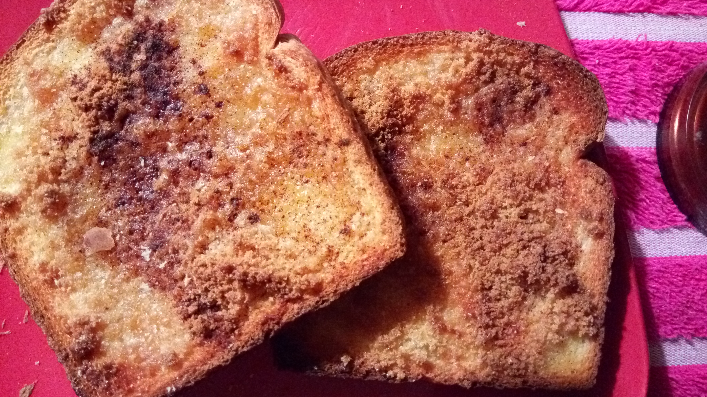

Cinnamon Toast

Description
Yummy cinnamon toast makes a great breakfast meal or a snack!
Ingredients
- 2 slices white bread
- 2 teaspoons butter or margarine
- 2 tablespoons white sugar
- 1 teaspoon ground cinnamon
Directions
- Use a toaster to toast the bread to desired darkness.
- Spread butter or margarine onto one side of each slice.
- In a cup or small bowl, stir together the sugar and cinnamon.
- Sprinkle mixture generously over hot buttered toast.